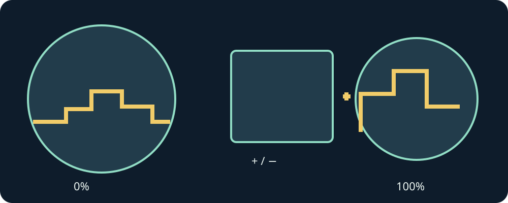
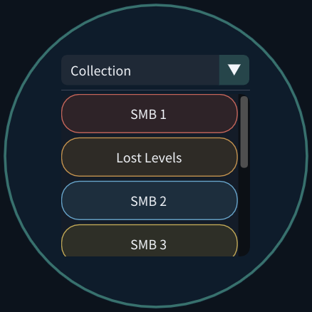

Drehe Krone oder Lünette zum Zoomen. Im Menü scrollen sie; Touch-Tasten + und - funktionieren ebenfalls.
0%: gesamtes geladenes Gebiet. 100%: Originalkamera. Türen und Röhren können ein anderes Gebiet laden.
Zum Vergrößern die Krone drehen. Von 85 bis 100 % bleibt das Bild flach. Beim Herauszoomen stehen eine sanfte Wölbung, gewölbte Ränder mit flacherer Mitte oder ein Fischauge zur Wahl. Flach erhält gerade Linien bei jeder Zoomstufe.
In den meisten Spielen springt B, Y rennt oder greift. Halte Richtung und Aktion mit verschiedenen Fingern.
Pause über das Pausensymbol oder Android-Zurück. Fortsetzen behält dein Spiel. Beenden steht unten in Sammlung.
Ein persönliches Paket enthält deine lokalen Module. Öffentliche Pakete benötigen eigene kompatible Moduldateien.
Übertrage Module nach CartridgeInbox und prüfe übertragene Module oder starte die App neu. Vorhandene Dateien bleiben erhalten.
Ein signiertes APK-Update erhält App-Daten. Deinstallation oder Datenlöschung entfernt lokale Module und Spielstände.
Die Tests verwenden Touch- und Drehereignisse auf einer Galaxy Watch8 Classic. Tragekomfort und Leistung bei langen Spielsitzungen sind noch zu prüfen.
/sdcard/Android/data/com.vhaloo.mariocompilationultra.wear/files/CartridgeInbox/
